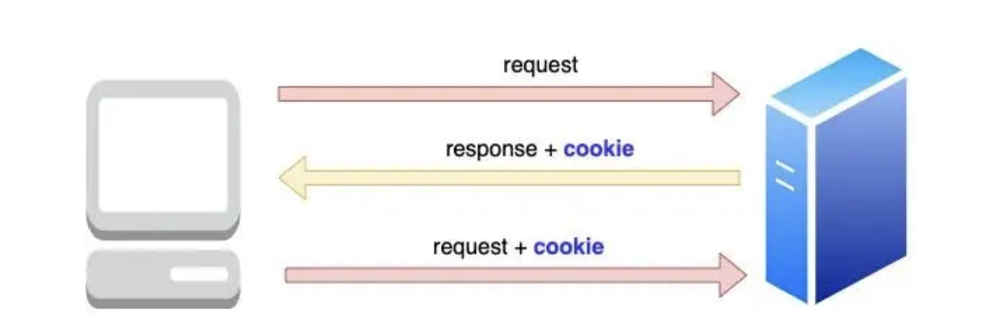
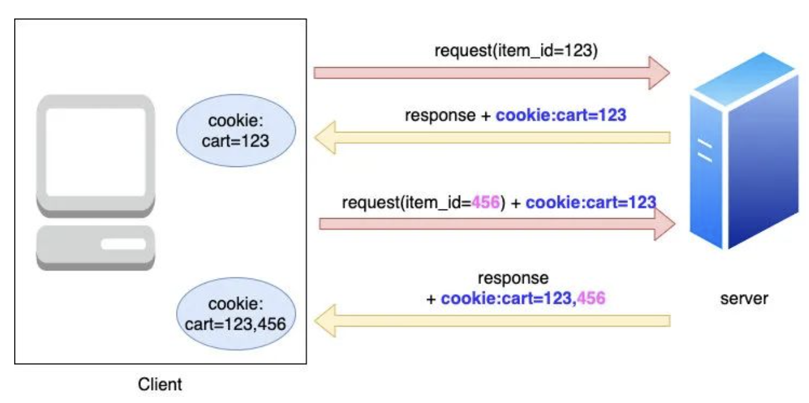
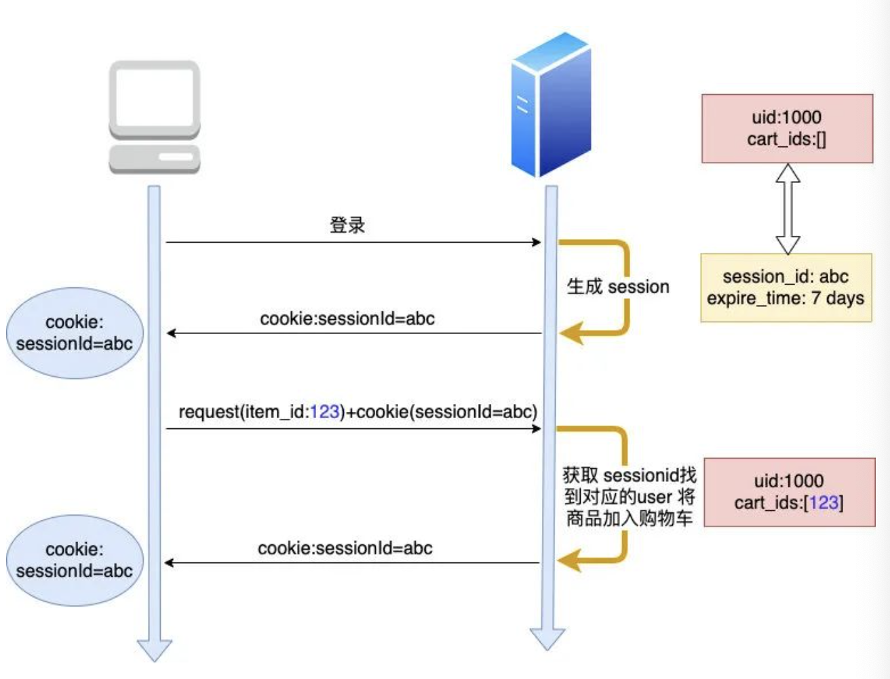
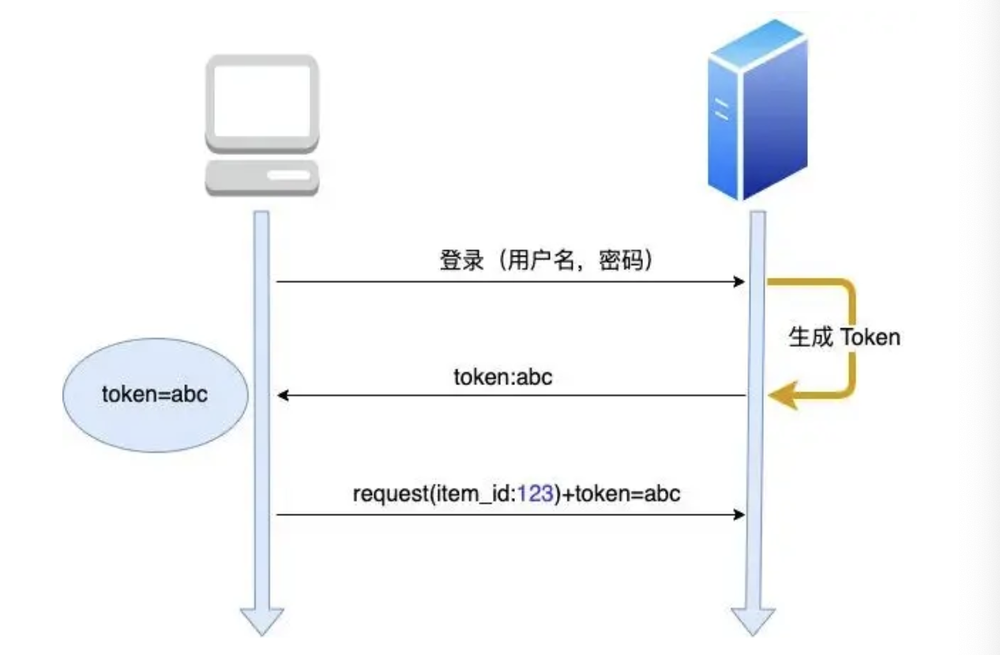
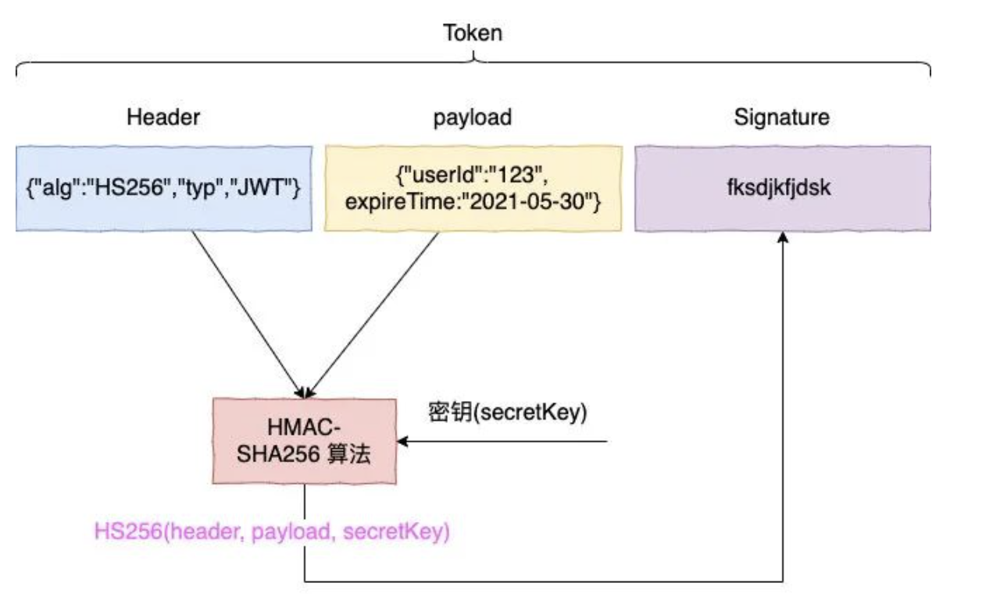

Cookie Session Token
这里主要是记录一下
CookieSessionToken这三者之间的关系，以及他们的区别。这三者在前端开发中是非常重要的，也是面试中经常会被问到的问题。
首先，我们要明确的是目前的开发都是基于前后端分离的架构。那么客户端要向服务端发送请求的时候，为了保证安全性，就需要一些机制来进行保证身份的正确性。这里就是 Cookie Session Token 这三者的作用。
Introduce
HTTP是无状态的
这里要提到一个概念先。HTTP是一个无状态协议。首先，为什么是无状态，这里有一个历史原因: 最开始的web是提供给人们看静态网页的。所以只有 GET 请求，浏览完即OK.所以两个链接之间是没有关系的，各自独立的。所以我们的HTTP是无状态的。简单的来说就是请求中不会保存用户的状态信息，同时服务器也不会保存用户的状态信息，否则的话负载有点大了。
但是我们后来又需要保存用户的状态信息，这个时候就需要 Cookie Session Token 这三者来进行保存用户的状态信息。
所以其实可以这样理解，这三者的本质目的都只有一个，那就是跟踪用户状态，让服务器可以识别并且跟踪这些特定用户请求的状态信息，可以及时的进行提供
什么是浏览器的 local storage
local storage 是浏览器提供的一种存储机制，可以存储一些用户的信息。但是这个存储是永久的，也就是说除非用户手动的去清除，否则的话，这个存储是不会被清除的。这样的话，我们就可以利用这个存储来存储一些用户的信息，比如用户的id等等。但是这个存储是不会被发送给服务器的，所以我们还是需要 cookie session token 来进行传递。
简单的来说，就是 local storage 也是可以存储用户信息的，它和 cookie 存储数据的侧重点不同而已。
Cookie
可以理解为
small text file小文本文件


上图就很简单的把cookie的概念和整个过程给展现出来了。cookie可以是存放了用户的一些信息，然后存在了本地。只需要在每次请求的时候进行修改与传输给服务器就可以了。但是这样有一个问题，那就是 cookie 会变得越来越大，对于每个请求来说就是一个负担了。
但 cookie 是一定程度上实现了HTTP状态的保持功能。我们可以把cookie理解成一种对于 HTTP 无状态的简单补充。
但是 cookie 也会有以下的两种问题
cookie是存在客户端的，并且大小也是有限制只有4KB.所以对于一些大的数据来说，cookie是不适合的。而且每个浏览器对于每个域名的cookie数量也是有限制的。- 其次，
cookie是明文传输的，所以有可能会被窃取。容易受到XSS攻击。
Session
那么针对上述的cookie 存在的一些问题，我们进一步的使用session来解决这样的问题。
首先，session 是存储在服务器端的，而不是客户端，这样的好处就是避免了 cookie 的 4KB 大小限制，只会取决于服务器的内存大小。
当然，这不代表cookie 就没用了，session的传递还是需要依靠cookie来进行传递的。简单的逻辑可以参考下图:

不要忘记 session 存在的本质其实也是进行用户状态的保存与传递跟踪。我们在进行 cookie 传递的时候，服务端会给一个响应，里面包含了一个 sessionID 来进行用户的身份跟踪。那么接下来的请求，我们不需要在cookie中添加一些需要的补充用户信息，只需要利用这个sessionID来进行传递即可。每次服务器在给予相应的时候，都从request的cookie中读取sessionID，然后进行相应的处理。这样就避免了cookie大小只有4KB无法存入过多的数据以及cookie的明文数据泄漏的问题了。
Session的问题
但是事实上，Session这样也是会存在一定的问题。我们大型的项目往往是以集群的形式存在的，也就是说会有多台服务器。那么这样的话，session就会有一定的问题。因为session是存储在服务器端的，那么如果用户的请求是在不同的服务器上，那么就会出现session不一致的问题。这样就会导致用户的状态信息不一致，这样就会出现一些问题。用户请求信息的一致性就会出现问题。这并不是我们想看到的。
首先，我们会想到的一些解决办法其实很简单：
-
既然有多台服务器，那么我们只需要进行session复制即可。也就是说我们要保证所有的服务器都有一个统一的session.但是小公司其实还行，但是面对大型的公司，他们的服务器都是成千上万，这样的话，session的复制就会变得很困难。而且也是一笔很大的额外开销，也会造成数据的冗余。所以这个方法并不优。
-
接着，既然不能让所有的服务器都共享一个
session，这个方法其实是可信的，比如我们把用户的session都存在redis等中间件中，在每次各个不同的服务端接收到请求的时候，就从redis等中间件中读取即可。方法可行是可行，但是这样的话又会多一次内部的链接，消耗了一点性能。可能对于中小厂来说，不太能接受，而且也没有到达使用redis的地步。
所以，下面就引入了Token来解决这样的问题。
Token
简单的来说，Token要做的就是，首先是依旧秘文，其次是无状态的，最后是可以跨域的。

正如上图所说的，用户先将账号和密码发送请求给了后端服务器，那么会得到一个token，那么在接下来的请求中，我们只需要带上这个token即可。
看起来很简单，但其实有几个问题需要注意的：
-
如果我随便找一个
token呢？事实上，这个办法是不行的，因为服务端有一个校验机制，会校验这个
token是否合法，从而判断是哪个用户。 -
那么为什么它不像
session那样根据sessionID来找到userid 呢？ 因为token本身就自带了用户身份信息。
我们可以把 token 视为全家桶，也就是说里面包含了如何解读它。下面是一个 token 的构成:

- Header : 用于指定了签名的算法，让服务器知道如何验证这个
token -
payload: 存放的是我们要传递的信息，比如用户的id等等header和payload都是以base64的形式存在的
-
signature: 用于验证token是否被篡改
当 服务器拿到header 和 payload 之后，会根据密钥来生成签名，再根据 token 中的签名进行比对，是否一致。如果一致，说明token是合法的，我们就可以进行相应的操作。
JWT 技术 JSON Web Token
常见面试题
Q1 如果浏览器设置了禁止cookie，那么session还可以正常使用吗?
A1 : 不可以，因为我们是利用 HTTP 请求中的 set-cookie 方法来存放 sessionID 的。如果浏览器禁止了cookie，那么session就无法正常使用了。我们就没有办法传递该用户对应的 sessionID 了。
Q2 在 Q1的背景下，我们有什么办法解决呢？
如果遇到这个问题，我们有解决办法，但是比较复杂
-
我们可以使用
URL重写的办法，简而言之就是在URL中添加sessionID，进行传递。类似GET方法那样会在URL中添加参数。但是这样我们的sessionID就会被暴露在URL中，这样就会有一定的安全性问题。所以这个方法并不推荐。 -
使用
token的JWT技术 -
我们可以从中做梗，也就是说在
form表单中添加隐藏项用来存储sessionID.这样我们只需要在payload中读取即可。
Q3 既然你提到了local storage，那么cookie 和它二者有什么区别？
同 : 二者都具有存储临时数据的功能，但是二者主要还是有很多不同的侧重点
不同 :
-
存储大小: 我们的cookie一般的容量是 4KB,但是浏览器的local storage可以是很多兆，例如 5MB. 这也决定了二者可以存储的数据可以有很大的不同。cookie更侧重于是一个身份凭证，而且是要放进HTTP请求中进行发送的，不能太大，只能存放有用的信息。比如 设置过期时间，跨域访问... 但是local storage由于有比较大的存储空间，所以一般用来存出同一个域名下不同页面之间的共享数据。这样能达成最大的性能效果。 -
生命周期:cookie的生命周期是可以有设置一个过期时间的。因为里面传递的是sessionID,是由服务器端设置的，只要过期时间到了，那么就会失效。但是浏览器的local storage是永久的储存，只能自己手动删除。 -
安全性: 打开过 开发者工具都应该知道，cookie值是直接暴露在HTTP的请求头中的，但是local storage都是存储在本地。所以cookie是不安全的，而local storage是安全的。
Q4 什么是集群部署的呢？
由于我们的后端的服务器可能有很多台，我们的每台服务器之间不共享会话信息，那么就当我们进行需要访问的时候，如果不共享会话信息，就需要一直重新登陆，可能每次访问都需要重新登陆，很麻烦，而且是一种效率低下的方法。
Q5 什么是 Session storage
它和 local storage 是有区别的， session storage 是关闭标签页即失效，而 local storage 是永久的。我们每次访问了一个页面，都会有一个 session storage 与之对应。你可以这样想，因为这个页面是要本地呈现的，它就需要一个地方来存储这些信息。如果需要长期储存的话，会选择储存在 local storage 中。
Q6 既然 Token 技术这么好？是不是没有缺点呢？
答案是否定的，我们可以从以下几个角度来看:
-
首先是生命周期，
Token是自从颁发之后，就是有效的。这样就会有一定的安全性问题。因为如果Token被盗了，那么就会有一定的风险。所以我们需要设置一个较短的过期时间，这样就会有一定的安全性问题。- 所以相对应的，我们需要设置一个定时刷新
Token的机制，让颁发出去的Token定期失效。 - 或者我们设置一个黑名单制度，每次在进行验证
Token的时候，都会先在黑名单中确认一下Token是否存在，如果存在的话，可以直接拒绝进行Token的身份校验。
- 所以相对应的，我们需要设置一个定时刷新